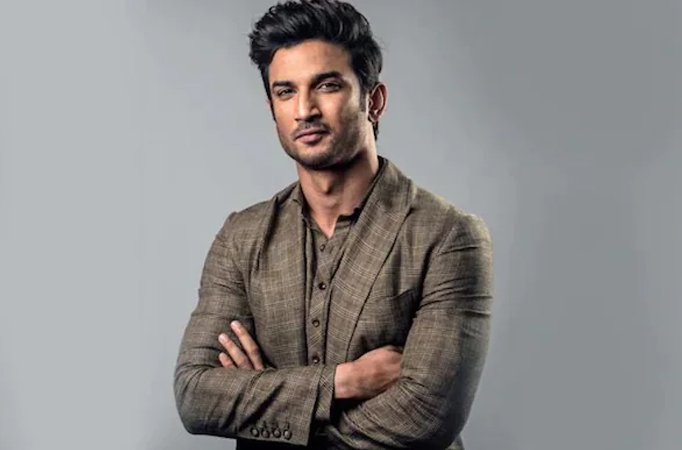

21 January 1986 – 14 June 2020
Sushant Singh Rajput was an Indian actor known for his work in Hindi cinema. He starred in a number of commercially successful Hindi films such as M.S. Dhoni: The Untold Story (2016), Kedarnath (2018) and Chhichhore (2019).Due to his contribution to the film industry, he received a Screen Award and was nominated for the Filmfare Awards on three occasions. He appeared on Forbes India's Celebrity 100 list twice since 2017.
Rajput began his acting career after dropping out of his engineering course at the Delhi College of Engineering and entering the theatre industry in Mumbai. He moved on to feature in Hindi television serials, his debut show was the romantic drama Kis Desh Mein Hai Meraa Dil (2008), followed by the lead role in the soap opera Pavitra Rishta (2009–2011). He made his film debut with the film adaptation Kai Po Che! (2013) which became a critical and commercial success. He followed up with his starring roles as a tourist guide in the romantic comedy Shuddh Desi Romance (2013) and the titular detective in the action thriller Detective Byomkesh Bakshy! (2015).Rajput also starred in a number of other films such as the reincarnation drama Raabta (2017), the historical drama Sonchiriya (2019) and the action thriller Drive (2019). His highest-grossing releases came with a supporting role in the satire PK (2014), and from the titular role in the sports biopic of Mahendra Singh Dhoni. For his performance in the latter, he received his first nomination for the Filmfare Award for Best Actor and became the winning nomination at the Indian Film Festival of Melbourne. Apart from acting, he was the founder of a nonprofit organisation and has been credited as the co-founder of a technological startup.
Sushant Singh Rajput was born in Patna in the state of Bihar to Krishna Kumar Singh and Usha Singh. His father is a retired technical officer and worked at Bihar State Handloom Corporation in Patna. He was the youngest of five siblings and had the nickname Gulshan. One of his four sisters Mitu Singh was a state-level cricket player. He attended the St. Karen's High School in Patna. His family moved to Delhi following his mother's death in 2002 where Rajput completed his schooling for intermediate studies in Kulachi Hansraj Model School. Rajput was reportedly an avid reader who was deeply interested in astrophysics and won the National Olympiad in Physics. He secured admission in the Delhi College of Engineering (later renamed Delhi Technological University) to pursue a Bachelor of Engineering degree in mechanical engineering. According to Rajput, he did not have any interest in engineering but his family gave him no option which left him dissatisfied. He instead wanted to become an astronaut and later an air force pilot but was also interested in Bollywood, being a fan of Shah Rukh Khan.
Rajput's personal relationships have been the subject of widespread media attention. In 2011, Rajput publicly proposed to his Pavitra Rishta co-star Ankita Lokhande during a national broadcast of the dance competition show Jhalak Dikhhla Jaa; both of them had participated in the show as competing contestants. The couple began dating after their first meeting on the set of Pavitra Rishta, where they had been cast as husband and wife to each other. In 2012, they began living together, and reports of an imminent marriage between the two occasionally cropped up in the media. In an interview, Rajput stated that marriage and cohabitation were no different and that it was hypocritical to treat the former as sacred and the latter as a crime. At an event, he had said, "I am very transparent about my relationships. I mean I will not hesitate to say that I am in a relationship".
On 14 June 2020, Rajput, aged 34, was found dead, hanging from the ceiling fan in his home in Bandra, Mumbai. He had reportedly shown signs of clinical depression and was suffering from bipolar disorder. The Mumbai Police commenced an investigation, stating that the death was being treated as a suicide. The postmortem report stated that the cause of death was "asphyxia due to hanging," and called it a "clear case of suicide." The autopsy doctors placed the time of death at 10 to 12 hours before postmortem examination on 14 June at 11:30 p.m.—meaning between 11:30 a.m. and 1:30 p.m. (Indian Standard Time). No foul play was found. The viscera report likewise ruled out foul play. On 25 July, Rajput's family lodged a first information report with police in Patna, where his father lives, accusing Rhea Chakraborty and five others of abetment of suicide.
Sushant Singh Rajput was an Indian actor who appeared in a number of Bollywood films, as well as some television shows. Here is a list of his filmography:
Kai Po Che! (2013), Shuddh Desi Romance (2013), PK (2014), Detective Byomkesh Bakshy! (2015), M.S. Dhoni: The Untold Story (2016), Raabta (2017), Kedarnath (2018), Sonchiriya (2019), Chhichhore (2019), Drive (2019), etc...
In addition to these films, Sushant Singh Rajput also appeared in a number of television shows, including "Pavitra Rishta" and "Kis Desh Mein Hai Meraa Dil".